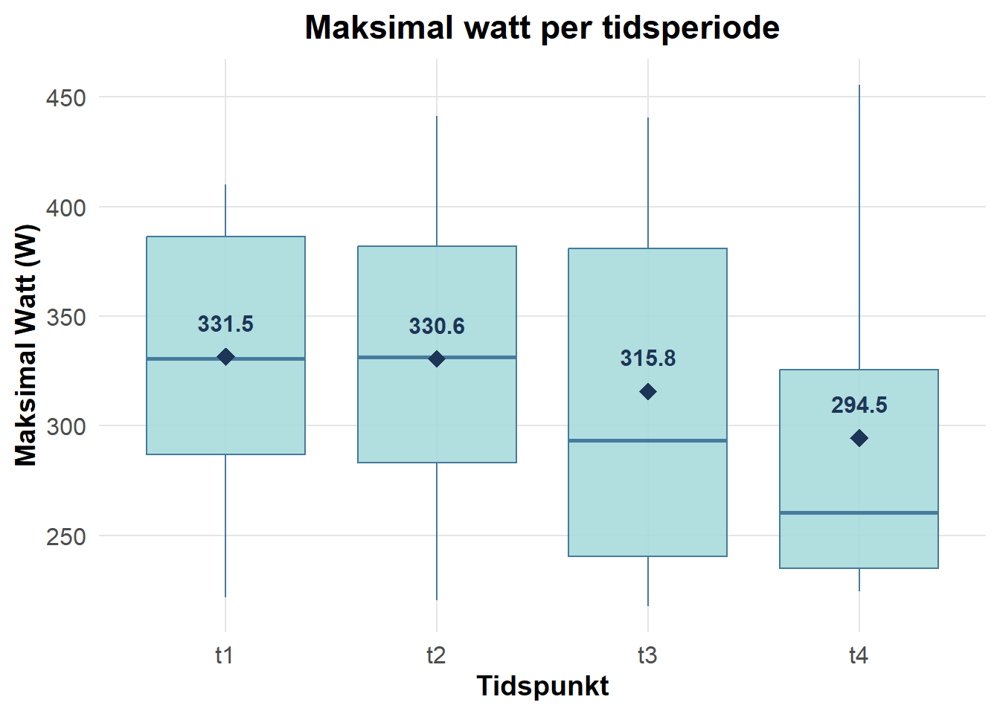
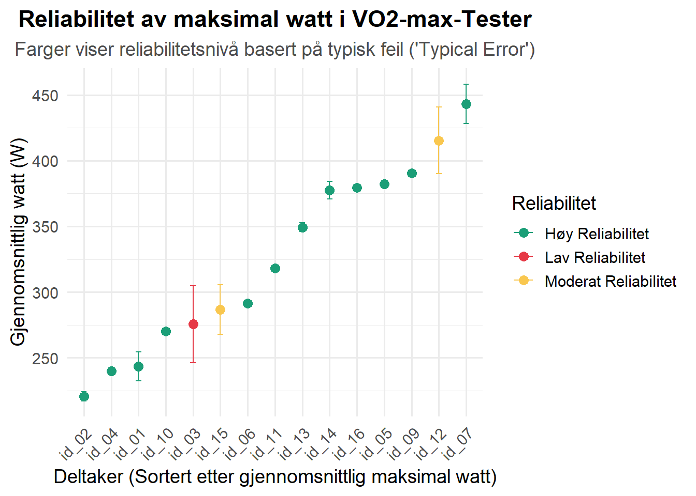

| Kvinne | Mann | |
|---|---|---|
| N | 3 | 11 |
| Alder | 23.3 (0.6) | 25.9 (4.0) |
| Vekt | 71.7 (9.9) | 81.2 (11.9) |
| Stature | 171 (8) | 182 (6) |
1 Assignment 1: Reliability and tools for reproducible data science
1 Introduksjon
I 2005 satte John Ioannidis forskningsverden på prøve med utsagnet om at de fleste publiserte forskningsfunn er feilaktig (Ioannidis (2005)). Han fremhevet mangel på reliabilitet som en sentral utfordring, der forskeres fleksibilitet i studiedesign og analyser bidrar til resulateter som ikke kan reproduseres. Reliabilitet referer her til muligheten for å gjenskape studier og oppnå lignende resultater (Spiegelhalter (2019), s.342-348).
Reliabilitet av en test kan kvantifiseres på flere måter, blant annet som variasjonen innen samme person, endring i gjennomsnitt og retest-korrelasjon (korrelasjonen mellom målinger ved gjentatte tester) (Hopkins (2000), s.2). Endring i gjennomsnitt viser hvordan tilfeldige eller systematiske faktorer, som læringseffekter, påvirker forskjellen mellom to tester. Retest-korrelasjon vurderer hvor godt en test reproduserer rangeringen av deltakere ved gjentatte forsøk. (Hopkins (2000), s.2).
Den tredje måten, variasjon innen samme person, er særlig viktig for å forstå reliabiliteten til målinger. Denne variasjonen fanger opp tilfeldige forskjeller mellom målinger på samme individ og kvantifiseres som standardavviket til de individuelle verdiene, også kjent som “typical error” eller “standard error of measurement” (Hopkins (2000), s.2). “Typical error”, på norsk typisk feil, kan forstås som variasjonen man vil forvente å observere fra forsøk x til forsøk y ved repeterte forsøk hos samme testdeltakere.
I denne rapporten vil VO2max-maks data fra fysiologi-laben bli analysert for å kvantifisere reliabilitet i form av “typical error” av maksimal watt oppnådd under testen. Gjennomføring og standardisering av testene vil bli forklart under metode, mens resultatene vil bli presentert med hovedvekt på betydningen av “typical error” for reliabiliteten til målingene.
2 Metode
Dataene som skal brukes for å måle reliabilitet er hentet fra 16 ulike testpersoner som gjennomførte gjentatte VO2max-makstest på ergospirometri på fysiologilaben. Det ble satt opp slik at alle skulle gjennomføre testen fire ganger spredd utover to uker, men det var kun åtte stk som gjennomførte fire tester. Det ble gjort antropmeteriske mål av testpersonene før hver test, men i Table 1.1 er det kun tatt utgangspunkt i målingene før første test. Totalt var det 14 stk som hadde baseline målinger som ble inkludert i Table 1.1.
Deltakerne ble delt opp i grupper, der en var testdeltaker, en skulle være testansvarlig, og de resterende var observatører som også hjalp testansvarlig med praktiske oppgaver. Det ble rulert på hvem som var testperson, testansvarlig og observatører, slik at alle fikk være testansvarlig.
2.1 Utstyr og kalibrering
For å måle den metabolske responsen under testen ble miksekammeret fra Vyntus CPX benyttet. Nødvendig volum- og gasskalibrert ble utført før hver test i henhold til produsenten sine retningslinjer. Ved differanser på over 2% under volumkalibrering eller over 0.2% under gasskalibrering ble nødvendig feilsøking igangsatt. Dette inkluderte kontroll for skader på turbinen eller sampleslangen, sjekk av gasskoblinger, samt inspeksjon for fukt i sampleslange og andre relevante faktorer.
I tillegg til måling av metabolsk respons ble laktatnivå målt etter ett minutt etter testslutt. Blodprøver ble samlet fra fra pekefingeren ved hjelp av en lansett, og laktat ble analysert med Biosen fra EKF Diagnostics. Apparatet hadde en innebygd timer som varslet behov for ny kalibrering hver time.
Testpersonene syklet på en ergometersykkel fra Lode. Tilpasning av sykkelen, som høyde på sete eller avstand mellom sete og styre, ble gjort før den første testen. Disse innstillingene ble lagret i Lode sin programvare, slik at hver testperson hadde standardisere sykkelinnstillinger ved alle tester. Alle sammen skulle benytte seg av MTB-pedaler (“Mountain Bike-pedaler”) og ha 172,5 mm lengde på kranarmene. En vifte ble plassert foran sykkelen for å gi testpersonene mulighet til avkjøling underveis i testen. Samme innstilling på viften ble brukt ved hver test for å sikre standardisering. Puls ble registrert ved hjelp av et Garmin pulsbelte, som var tilkoblet programvaren SentrySuite fra Vyntusen.
2.2 Forberedelser av testdeltakeren
Før testingen ble det etablert retningslinjer for mat- og drikkeinntak, døgnrytme, trening og oppvarming. Testpersonene ble oppfordret til å opprettholde normal døgnrytme gjennom de to ukene testene pågikk. Det ble spesifisert at siste hovedmåltid skulle inntas senest to timer før teststart, men det var tillat å spise en mindre karbohydratkilde som en banan, en bar eller en gel, opptill 30 min før testen. Deltakerne ble også bedt om å opprettholde sitt vanlige koffeininntak og sørge for å være i væskebalanse. oppvarmingen besto av 5 min på ergometersykkel, hvor intensiteten gradvis ble økt: de første 2 minuttene på en bestemt watt (for eksempel 150W), de neste 2 minuttene på høyere intensitet (175W), og det siste minuttet, eksempelvis på endå høyere intensitet (220W). Selv om intensiteten ble tilpasset individuelt, skulle den samme oppvarmingsprotokoll følges ved hver test.
2.3 Testgjennomføring
Testen startet på en gitt watt (motstand), som for hvert minutt økte gradvis helt til testpersonen ikke mestret å sykle lengre (ramp protokoll). Hva watt man startet på og hvor mye den økte per minutt, varierte fra person til person på bakgrunn av treningsbakgrunn. Hele testen skulle gjennomføres sittende, og ved en tråkkfrekvens på under 60 rpm (rate per minute) eller om testpersonen reiste seg fra setet, ble testen avsluttet. Testansvarlig skulle kun informere om hvor lenge det var til neste økning og hvilken watt det ble syklet på. Informasjon som puls, V2max eller andre parametre fikk testpersonen ikke tilgang til underveis i testen. Mot slutten av testen skulle testansvarlig bidra til å motivere testpersonen slik at han/hun tok ut sitt ytterste. Hvordan testansvarlige valgte å løse dette varierte, men det viktigste var at han/hun oppførte seg tilnærmet lik ved hver test ovenfor den som syklet.
Rett etter testslutt ble testpersonen spurt om Borg skala for å beskrive grad av anstrengelse. Han/hun ble spurt på å oppgi et tall mellom 6-20 på hvor sliten han/hun er, der 6 er “ingen anstrengelse” og 20 er “maksimal anstrengelse”. Laktatprøve ble tatt etter ett minutt, og plassert i beger med løsning før den ble vendt og satt i Biosen for måling. Testansvarlig noterte ned hvor lenge testpersonen syklet og hva watt han/hun endte på.
2.4 Datahåndtering
Rådata om metabolsk respons ble samlet inn med programvare fra Vyntus og eksportert til Excel for en første organisering. Testens varighet og sluttwatt ble manuelt registrert av testansvarlig i samme excel-fil. Videre datahåndtering, som filtrering, visualisering og beregninger av gjennomsnitt, standardavvik og “typical error”, ble utført i R (versjon 4.4.1). Manglende data ble håndtert ved ekskludering av ufullstendige rader for variabler som var sentrale for analysene.
3 Resultat
Gjennomføringen av de fire VO2-maks-testene viste en nedadgående trend i maksimal watt-verdier fra t1 til t4. Som vist i Figure 1.1, falt gruppens gjennomsnittlige og median watt-verdier fra første test til fjerde test. Samtidig er det en betydelig større spredning av målingene i test tre og fire sammenlignet med første og andre test. Antall deltakere som fullførte tester ved de ulike tidspunktene avtok gradvis fra t1 (n = 14) og t2 (n = 14) til t3 (n = 11) og t4 (8 deltakere).

For å forstå variasjonene på individnivå, ble maksimal watt analysert for hver deltaker. Figure 1.2 viser gjennomsnittlig watt for hver deltaker, sortert fra lavest til høyest, med feilstenger som representerer typisk feil for å visualisere variasjonen mellom målinger for hver deltaker. Typisk feil gir en indikasjon på den forventede variasjonen i watt ved en ny test. Fargekodingen angir enten høy (CV ≤ 3%), moderat (CV > 3% og ≤ 5%) og lav (CV > 5%) reliabilitet (Hopkins (2000)). Generelt viste de fleste testpersonene høg reliabilitet, mens noen hadde større variasjon og lavere reliabilitet mellom målingene. Det er viktig å påpeke at Figure 1.2 kun inkluderer testpersoner som har gjennomført to eller flere tester, ettersom dette er nødvendig for å kunne beregne typisk feil, $ = $, og CV, $ = $.

Table 1.2 gir en detaljert oversikt over typisk feil og CV for hver deltaker, beregnet basert på alle tester gjennomført av den enkelte. De er rangert etter gjennomsnittlig watt, og fargene følger samme rangering mellom høy (grønn, CV ≤ 3%), moderat (gul, CV > 3% og ≤ 5%) og lav (rød) (CV > 5%) reliabilitet. Som i Figure 1.2, viser Table 1.2 generelt høy reliabilitet blant deltakerne, med koeffisient av variasjon (CV) ≤ 3 % for flertallet. Id_09, id_11, id_16, og id_10 skiller seg ut med svært lav CV (< 1 %), noe som indikerer konsistente målinger mellom testene. Imidlertid ble betydelig variasjon observert for id_03 (CV = 10.50 %) og id_12 (CV = 5.08 %), som begge har lav reliabilitet. Id_01 og id_04 ligger i kategorien moderat reliabilitet med CV mellom 3 % og 5 %. Det er verdt å merke seg at id_11 ikke viser noen variasjon mellom målingene (CV = 0 %), som kan indikere perfekt samsvar mellom testene, men bør vurderes for mulig feilregistrering. Mens id_08 mangler tilstrekkelige data for beregning av typisk feil og CV.”
| Sammenligning av typisk feil og CV | |||
|---|---|---|---|
| Hver rad representerer en deltaker | |||
| Deltaker-ID | Gj.snitt watt | Typisk feil | CV (%) |
| id_07 | 434.90 | 13.53 | 3.11 |
| id_12 | 406.90 | 20.68 | 5.08 |
| id_09 | 389.10 | 1.52 | 0.39 |
| id_05 | 386.70 | 4.33 | 1.12 |
| id_16 | 381.50 | 2.17 | 0.57 |
| id_14 | 379.50 | 4.04 | 1.06 |
| id_13 | 346.60 | 4.91 | 1.42 |
| id_11 | 318.30 | 0.00 | 0.00 |
| id_15 | 292.90 | 8.73 | 2.98 |
| id_03 | 290.40 | 30.50 | 10.50 |
| id_06 | 286.00 | 5.33 | 1.86 |
| id_10 | 269.40 | 0.82 | 0.31 |
| id_01 | 242.70 | 8.99 | 3.71 |
| id_04 | 231.00 | 9.00 | 3.90 |
| id_08 | 230.00 | NA | NA |
| id_02 | 221.00 | 1.96 | 0.89 |
For å evaluere reliabiliteten og konsistensen i målingene over tid, har det blitt gjort parvise sammenligninger av målinger på to spesifikke tidspunkter. I Table 1.3 så referer testpar til denne parvise sammenligningen mellom målinger utført på to påfølgende tidspunkt for samme deltaker. I denne analysen har man sett på første test og andre test (t1 -> t2), andre test til tredje test (t2 -> t3) og tredje test til fjerde test (t3 -> t4). Typisk feil og koeffisient av variasjon (CV) har blitt beregnet basert på forskjellen mellom målingene i hvert par i tråd med anbefalingene til Hopkins et al. (2000) (Hopkins (2000), s.11). Samme fargekode som er blitt brukt i de andre tabellene og figurerne for å illustrere grad av reliabilitet, er også brukt i tabellen under.
| Typisk feil og koeffisient av variasjon (CV) per testpar | ||
|---|---|---|
| Kun basert på w.max for tidspunktene t1, t2, t3 og t4 | ||
| Testpar | Typisk Feil | Gj.snitt CV (%) |
| t1 -> t2 | 12.59 | 2.53 |
| t2 -> t3 | 29.53 | 5.45 |
| t3 -> t4 | 8.96 | 4.43 |
Basert på funnene i Table 1.3 viste testparet t1 -> t2 lavest CV (2.53 %), noe som indikerer høy reliabilitet mellom disse målingene, mens t2 -> t3 hadde høyest CV (5,45 %), som tilsier lav reliabilitet og større variasjon. Antall testpersoner i testparene varierte, med 14 personer for testpar t1 -> t2, 10 personer for t2 -> t3, og 6 personer for t3 -> t4. Denne variasjonen kan påvirke beregningene av typisk feil og CV, spesielt i testpar med færre deltakere. Det er derfor mulig at den lavere reliabiliteten observert for t3 -> t4 delvis skyldes usikkerhet forårsaket av den mindre utvalgsstørrelsen.
4 Diskusjon
Denne rapporten undersøkte reliabiliteten i målinger av maksimal watt hentet fra VO2max-maks-tester, med fokus på typisk feil og koeffisienten av variasjon (CV) som mål på reliabilitet. Resultatene viste generelt høy reliabilitet, men med variasjon mellom testparene. Dette indikerer at reliabiliteten kan påvirkes av både biologiske faktorer, som fatigue og fokus, og teknologiske faktorer, som variasjoner i utstyr eller testledere.
Typisk feil reflekterer variasjon fra flere kilder, inkludert biologiske faktorer som tretthet og motivasjon, samt teknologiske faktorer som kalibrering av utstyr og operatørens tilnærming (Hopkins et al., 2000) (Hopkins (2000), s.2; Halperin, Pyne, and Martin (2015)). Selv om standardisering av oppvarming, protokoller og testforhold ble gjennomført, er det vanskelig å eliminere alle kilder til variasjon. Typisk feil gir derfor et mål på denne variasjonen ved gjentatte målinger. I denne analysen ble typisk feil beregnet som standardavviket av differansen mellom påfølgende målinger, justert med faktoren \(\sqrt{2}\):
\[ TE = \frac{SD_{\text{diff}}}{\sqrt{2}} \]
Denne tilnærmingen ble valgt for å fokusere på variasjonen mellom målinger, uavhengig av gjennomsnittsverdien for maksimal watt (Hopkins (2000), s.3). Ved å fjerne innflytelsen fra prestasjonsnivået, gir denne metoden et mer rettferdig grunnlag for å sammenligne reliabiliteten mellom testparene, særlig når deltakernes prestasjonsnivå varierer.
Selv om typisk feil er nyttig, har den en begrensning: Den øker med måleverdien, noe som gjør det vanskelig å sammenligne reliabiliteten mellom deltakere med ulik prestasjonsevne. For eksempel vil en utøver med høy maksimal watt ha en høyere absolutt typisk feil enn en utøver med lavere watt (Hopkins (2000)). For å håndtere dette ble koeffisienten av variasjon (CV) brukt som et supplerende mål:
\[ CV (\%) = \frac{\text{Typical Error}}{\text{Mean}}\times 100 \]
CV er dimensjonsløs og gir et mål på variasjonen i prosent av gjennomsnittet, noe som gjør det mulig å sammenligne reliabiliteten mellom deltakere, testforhold og utstyr (Hopkins (2000), 3). Dette var særlig viktig i denne analysen for å evaluere systematiske forskjeller i reliabilitet mellom testparene og over tid.
En begrensning er variasjon i antall deltakere mellom testparene, noe som kan ha påvirket presisjonen i utregninge av typisk feil og CV. For eksempel var det bare 6 personer som ble brukt i analysen av testpar t3 -> t4, noe som fører til økt usikkerhet i estimatene. I tillegg vil biologiske og teknologiske faktorer som dagsform, tretthet, variasjon i kalibrering av utstyr og testleders tilnærming, ha bidratt til variasjon, til tross for standardisering.
Samtidig som det er flere ting som kan ha påvirket estimatene, vil standardiseringen som ble gjort minimere for ytre påvirkninger. I tillegg vil kombinasjonen av typisk feil og CV gi et mer nyansert bilde av variasjonen i målingene. Bruken av \(TE = \frac{SD_{\text{diff}}}{\sqrt{2}}\) gir et bedre sammenligningsgrunnlag for å analysere reliabilitet over tid mellom ulike testpar, ved å fjerne innflytelsen fra gjennomsnittsverdien.
5 Konklusjon
Denne rapporten evaluerte reliabiliteten i målinger av maksimal watt fra VO2max-maks-tester ved bruk av typisk feil og CV. Analysen viste generelt høy reliabilitet, men med variasjon mellom testparene som kan tyde på biologiske og teknologiske faktorer. For å muliggjøre sammenligning på tvers av testpersonene og over ulike tidspunkter av testing, ble CV brukt som et dimmensjonsløst mål sammen med typisk feil. Standardisering av protokoller bidro til å redusere variasjon og øke reproduserbarheten.
Halperin, I., D. B. Pyne, and D. T. Martin. 2015. “Threats to Internal Validity in Exercise Science: A Review of Overlooked Confounding Variables.” Journal Article. Int J Sports Physiol Perform 10 (7): 823–29. https://doi.org/10.1123/ijspp.2014-0566.
Hopkins, W. G. 2000. “Measures of Reliability in Sports Medicine and Science.” Journal Article. Sports Med 30 (1): 1–15. http://www.ncbi.nlm.nih.gov/pubmed/10907753.
Ioannidis, John P. A. 2005. “Why Most Published Research Findings Are False.” Journal Article. PLOS Medicine 2 (8): e124. https://doi.org/10.1371/journal.pmed.0020124.
Spiegelhalter, D. J. 2019. The Art of Statistics : How to Learn from Data. Book. First US edition. New York: Basic Books.